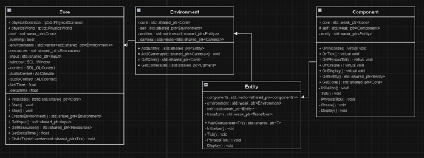
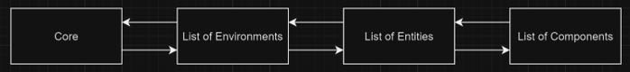
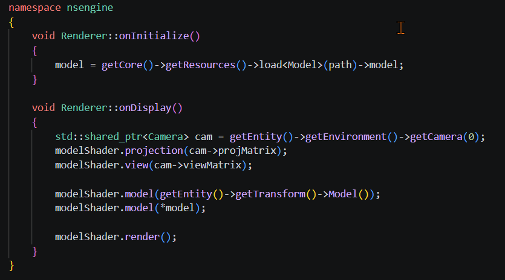
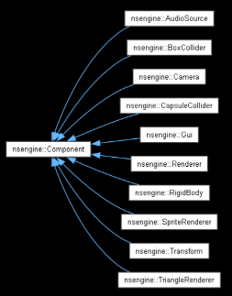
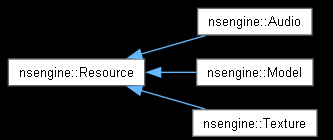

Game Engine Programming | NSEngine

01 // PROJECT_ABSTRACT
The goal of this project was to develop a 3D game engine and prototype game in C++ using a custom hybrid architectural design combining inheritance and an Entity Component System (ECS). Built from the ground up using a professional toolchain, including CMake for build management and Git via Fork, the engine focuses on highly integrated subsystems designed for scalability and reusability.
Architecturally, the system utilizes a clear hierarchy: a centralized Core manager handles initialization, baseline systems execution, and management of independent game environments. These environments encapsulate scene-specific logic, owning a collection of entities which in turn host custom component modules. A basic structural overview of this data ownership flow can be seen below.

02 // ARCHITECTURE_DETAILED
Tech used C++, Rend, SDL, ReactPhysics3D
The engine has 5 different update cycles used to trigger events, handle physics, rendering, etc. These are shown below, the names are mostly self explanatory, but there are explanations for where each cycle is called in the paper linked at the bottom of this page.
- OnCreate
- OnInitialize
- OnPhysicsTick
- OnTick
- OnDisplay
Environments
This game engine has the framework to be able to effectively create "scenes", or environments in this case, that act just like the scenes in Unity or Unreal. Essentially the scene is the overall parent of every object, and subsequently every component on each object within each given environment. You can take a look back at the engine overview further up the page to see that hierarchy Engine > Environment > Entities > Components. Structuring it this way means that while there isn't a hardcoded environment manager, you could easily spin up your own manager to handle creating or destroying custom environments on the fly.
Entity Component System
As i mentioned previously this game engine leverages an Entity component system, which as the name suggests (and as i have previously lightly touched on) breaks objects down into 3 parts. The entity itself, this is simply a unique id that acts as a container, think the chassis of a car holding the rest of the components together. Then you have the components and systems, which in pure ECS frameworks are separate. However, this engine utilizes more of an object-oriented ECS framework that combines the two, in the car analogy they would be the computers (components) and engine (systems). These components handle their own update cycles when relevant as seen in the image below.

The components currently included within the engine are as follows:
- Audio Source
- A component for handling where audio gets played
- Box Collider
- Camera
- Capsule Collider
- GUI
- Renderer
- Rigidbody
- Sprite Renderer
- Transform
- Triangle Renderer

Resources and inheritance

Simple game demo
03 // HURDLES_RESOLVED
The single biggest challenge i faced while creating this project was the shear volume of things to consider while creating a game engine, which can be easily become overwhelming. Because I tackled this through upfront planning rather than coding on the fly, enforcing a strict structural hierarchy before opening the IDE at all. As detailed in the class architecture diagram at the very top of this page, I mapped the entire engine into four isolated areas of responsibility: configuration control (Core), scene management (Environment), game object creation (Entity), and modular behavior (Component). This planning ensured that no matter how many features were added later, each had a predetermined, isolated slot to live in without breaking the rest of the ecosystem.
04 // RESEARCH_PAPER
If you would like to look at the full paper i wrote for this project, please click the link below.
> FETCH_FULL_RESEARCH_PAPER.PDF